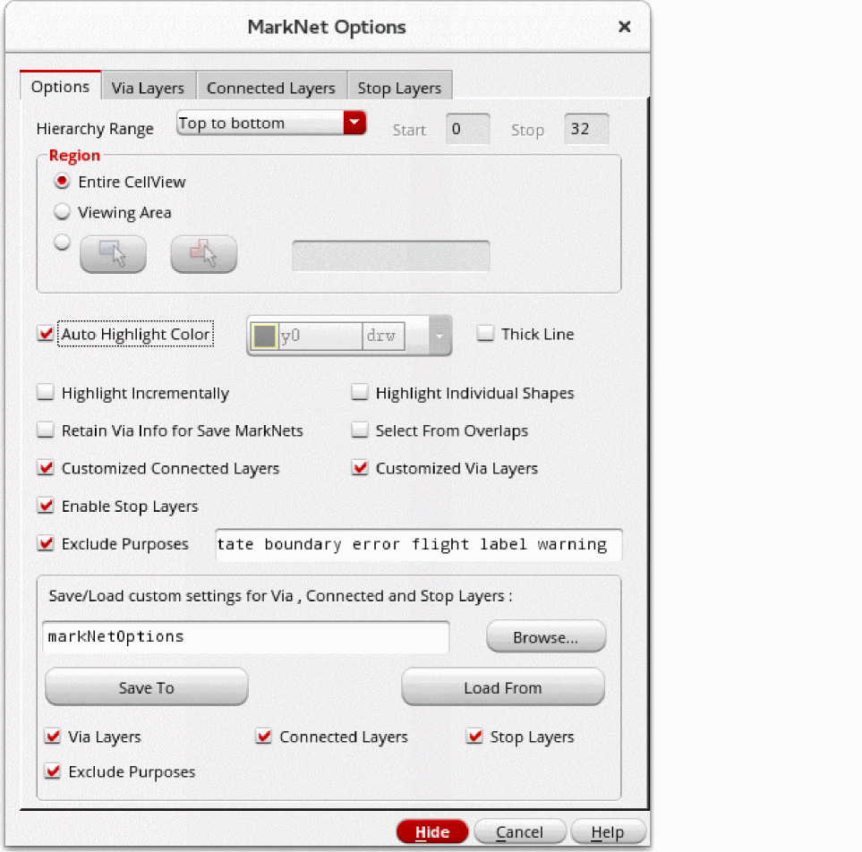
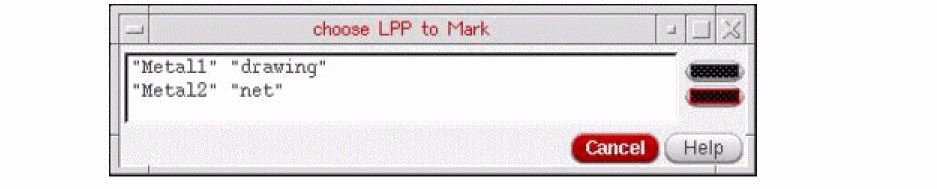
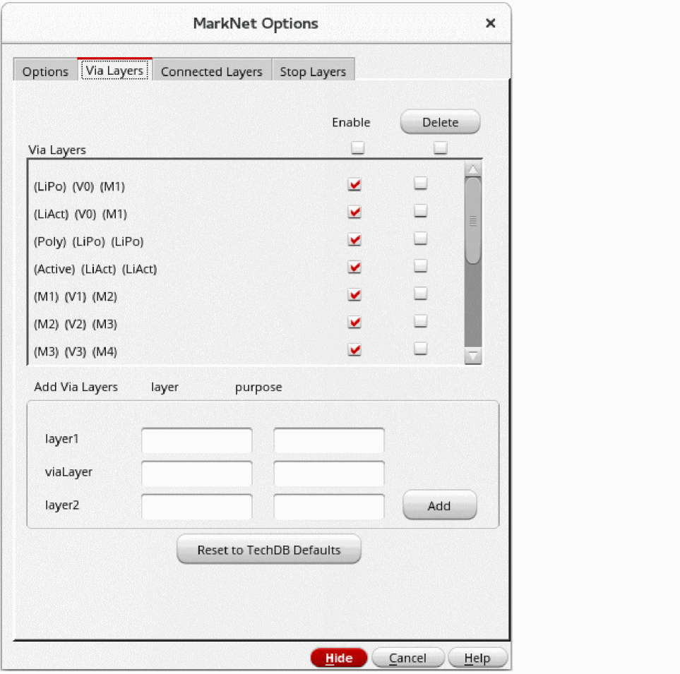
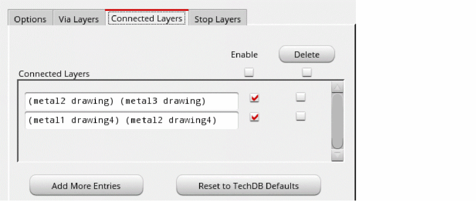
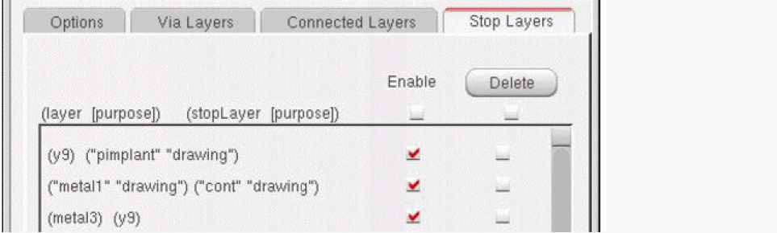

Tracing Nets
To trace a net, you need to specify the tracing options, via layers, connected layers, and stop layers in the MarkNet Options form. You can then highlight the required nets on the canvas.
- Specifying Tracing Options
- Specifying Via Layers
- Specifying Connected Layers
- Specifying Stop Layers
- Highlighting the Required Nets
Specifying Tracing Options
To specify the options for tracing a net:
- In the layout window, choose Connectivity – Nets – Mark.
-
Press
F3to open the MarkNet Options form.
 -
Specify the settings on the Options tab of the form.
-
Set Hierarchy Range.
If you choose User defined from the drop-down list, the Start and Stop fields become editable. Specify the start and stop levels for starting and stopping net tracing. -
In Region, specify the area to trace.
By default, the entire cellview is traced. You can also specify a rectangular or polygonal area. -
Ensure that the Auto Highlight Color check box is selected if you want the color of highlighted nets to automatically cycle through Cadence-defined layer-purpose pairs (LPPs).
Deselect the Auto Cycle check box if you want to manually specify the color for highlighted nets. This activates the layer-purpose pair list. Select the required LPP from the list. -
Select the Highlight Incrementally check box if you want to view a progressive highlighting of the connectivity.
Instead of displaying the connectivity incrementally, you can useCtrl+Cto stop the Mark Net command from further processing shapes and to display the marked shapes processed until then. - Select the Highlight Individual Shapes check box to display a separate highlight for each shape.
-
Select the Select From Overlaps check box.
If this check box is selected, the Choose LPP to Mark form appears when you click at a point where shapes overlap. You can select an LPP in this form to specify the shape from which to begin tracing. - Ensure that the Customized Via Layers, Customized Connected Layers, and Enable Stop Layers check boxes are selected to enable the settings specified on the Via Layers, Connected Layers, and Stop Layers tabs to be used for tracing nets. If any of these check boxes are not selected, the corresponding tab also gets disabled.
- Select the Retain Via Info for Save MarkNets check box before running the Mark Net command if you later want to save via shapes in a cellview by using the Connectivity – Nets – Save All MarkNets command. By default, no via shapes are saved in the cellview used for storing the traced shapes.
-
In the Save/Load custom settings for Via, Connected and Stop Layers section, specify the file name to which you want to save settings or from which you want to load the settings.
To save the settings to a file, click Browse and specify the location and name of the file. By default, all the settings specified on the Via Layers, Connected Layers, and Stop Layers tabs are saved. If you do not want to save the settings for a layer type, deselect the corresponding check box. Then, click Save To.
To load the settings from a file, click Browse and specify the location and name of the file. By default, the Via Layers, Connected Layers, and Stop Layers tabs are all populated with the settings stored in the file. If you do not want to load the settings for a layer type, deselect the corresponding check box. Then, click Load From.
-
Set Hierarchy Range.
Specifying Via Layers
To specify via layers for tracing a net:
-
Click the Via Layers tab on the MarkNet Options form.
 -
In the layer1, viaLayer, and layer2 fields, specify the LPPs — the layer name in the layer column and the purpose name in the purpose column.
If you leave the purpose field blank, the Mark Net command interprets it as all purposes of the specified layer. -
Click Add.
The new via layer in the (layer1) (viaLayer) (layer2) format is displayed in the Via Layers list box. If any of the layers is invalid or the specified via layer combination already exists, clicking Add does not add the via layer to the list box. A warning message is displayed in the CIW.
By default, the Enable check box against the newly added via layer is selected and the via layer is used for tracing. You can deselect the Enable check box for any via layer that you do not want to be used for tracing. To select or deselect all the via layers in one go, select or deselect the Enable check box at the top of the Enable column. - Select the check box against a via layer in the Delete column and click Delete if you want to delete the via layer. If you want to delete all the via layers, select the Delete check box at the top of the Delete column and click Delete.
-
Select the Reset to TechDB Defaults check box if you want to use the default via layers defined in the technology file. All via layers defined in the technology file are displayed in the list box, and the Enable check box for each is selected by default.
Any via layers added by you are deleted from the list box. If you want, you can add your own via layers after populating the ones from the technology file.
Specifying Connected Layers
To specify connected layers for tracing a net:
- Click the Connected Layers tab on the MarkNet Options form.
-
Click Add More Entries.
A text field appears in the Connected Layers list box. -
Specify the connected layer combination in the text field.
In the example shown in the figure below, the connected layers added imply thatmetal2-drawingis connected tometal3-drawingandmetal1-drawing4is connected tometal2-drawing4.
You can specify more than two LPPs as connected layers. If you do not specify the purpose, all purposes of that metal layer are connected to the other specified LPP. -
Click Add More Entries to add more entries for connected layers.
By default, the Enable check box against the newly added connected layer is selected and the connected layer is used for tracing. You can deselect the Enable check box for any connected layer that you do not want to be used for tracing. To select or deselect all the connected layers in one go, select or deselect the Enable check box at the top of the Enable column. - Select the check box against a connected layer in the Delete column and click Delete if you want to delete the connected layer. Select the Delete check box at the top of the Delete column and click Delete if you want to delete all the connected layers.
-
Select the Reset to TechDB Defaults check box if you want to use the default connected layers defined in the technology file. All connected layers defined in the technology file are displayed in the list box, and the Enable check box for each is selected by default.
Any connected layers added by you are deleted from the list box. If you want, you can add your own connected layers after populating the ones from the technology file.
Specifying Stop Layers
To specify stop layers while tracing a net:
- Click the Stop Layers tab on the MarkNet Options form.
-
In the layer and stopLayer fields, specify the LPPs — the layer name in the layer column and the purpose name in the purpose column.
If you leave the purpose field blank, the Mark Net command interprets it as all purposes of the specified layer. -
Click Add.
The new stop layer in the (layer) (stopLayer) format is displayed in the list box.
In the example shown in the figure below, the stop layers added imply thatpimplant-drawingis a stop layer for all purposes ony9,cont-drawingis a stop layer formetal1-drawing, and all purposes ony9are stop layers for all purposes onmetal3.
By default, the Enable check box against the newly added stop layer is selected and the stop layer is used while tracing. You can deselect the Enable check box for any stop layer that you do not want to be used while tracing. To select or deselect all the stop layers in one go, select or deselect the Enable check box at the top of the Enable column.
Select the check box against a stop layer in the Delete column and click Delete if you want to delete the stop layer. Select the Delete check box at the top of the Delete column and click Delete if you want to delete all the stop layers.
Highlighting the Required Nets
To highlight the required nets on the canvas, after specifying the settings in the MarkNet Options form:
-
In the design window, click the shape to highlight the required net.
If you click to select an already highlighted net, the following warning message appears in the CIW:*WARNING* Selected object is on an existing marked net.
The net is highlighted on the specified levels of the hierarchy. - Click a point on the second net that you want to highlight. The second net is highlighted on the specified levels of the hierarchy.
Related Topics
Return to top